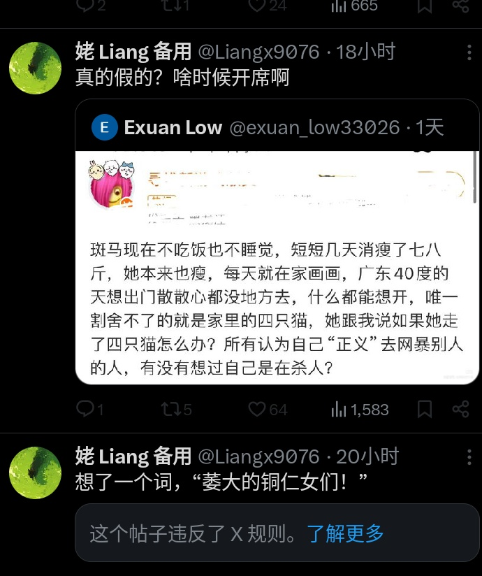
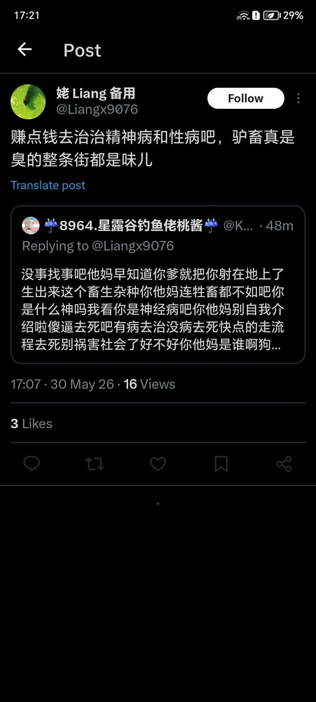

432InfantryRegiment
@432Ifantrygroup
什么女人女人的？你爱女人吗？你是怎么对待你的“同胞”的？咒她们去死，说她们有性病，我看你对女人的态度也不比牢A好多少嘛，牢A好歹只是说女留学生三通一达，可不敢咒她们死，你这更进一步，直接说她们被操死得性病死。
你这女权要只维护“同志”不维护“同胞”，那你赶紧改个别的名字，别满嘴女人女人的


姥Liang
@8964Liangx
我发现屌畜特别会给女人泼脏水扣帽子，这个高管明明已经被证实是被男员工诬陷的，但是无论什么情况之下，牠们都不停地发这个人的照片，不停地把她跟这件事情联系起来。
我觉得女人缺乏点名和不停重复的能力，比如我现在提南京审计大学顾振佳，还有几个人记得这男的因为偷拍被开除的？ https://t.co/1SlUXu7DjO